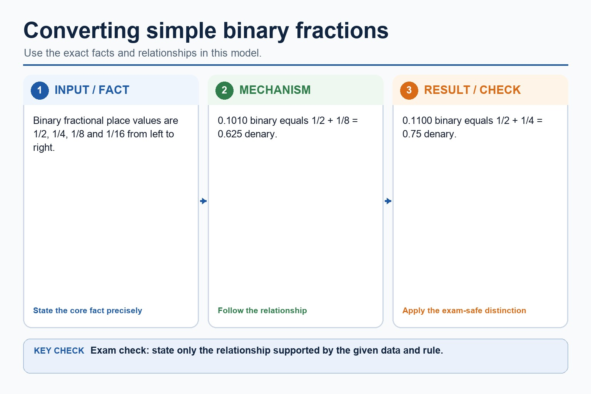
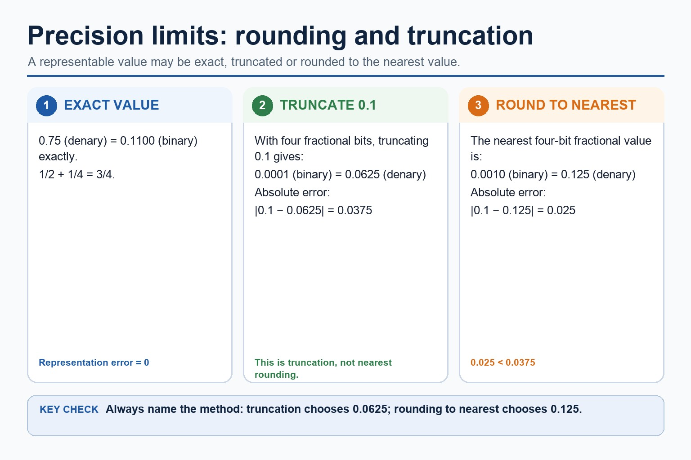
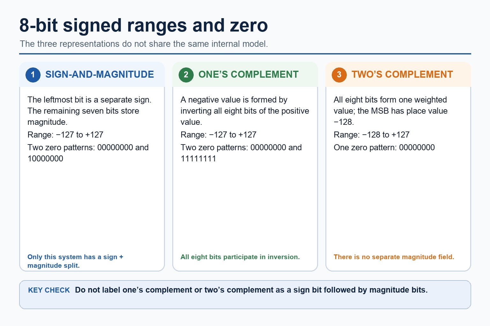
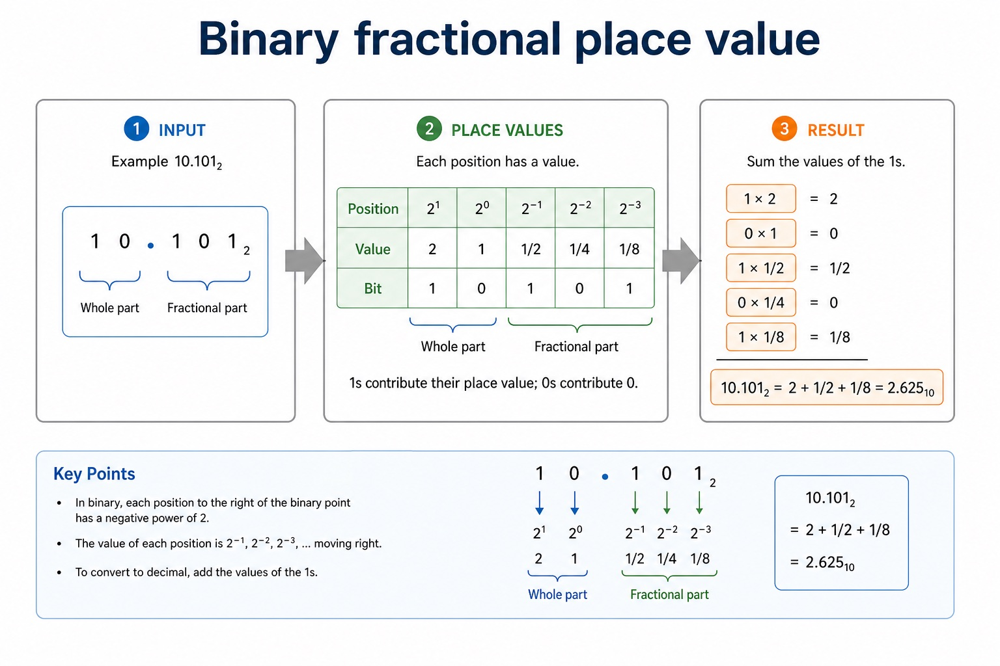
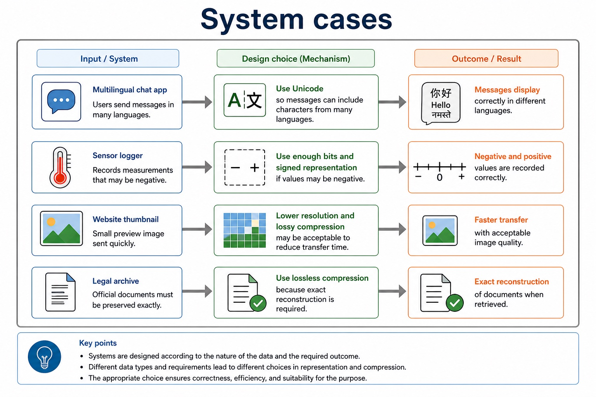
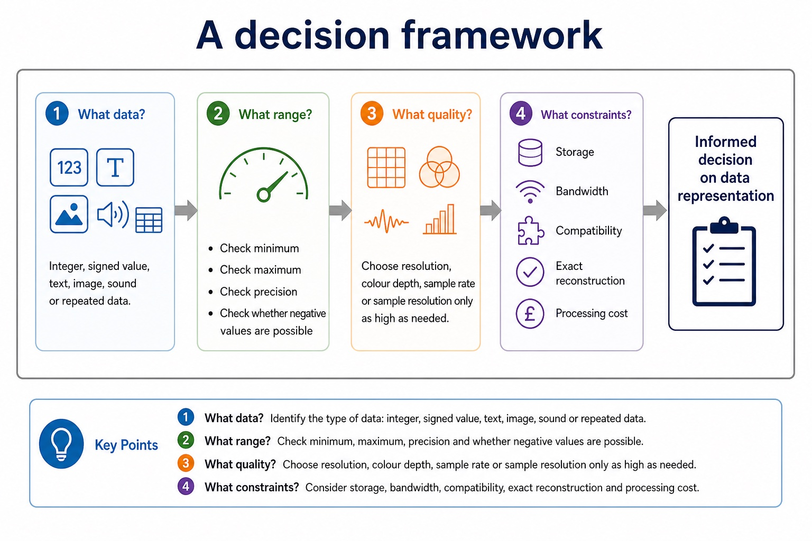
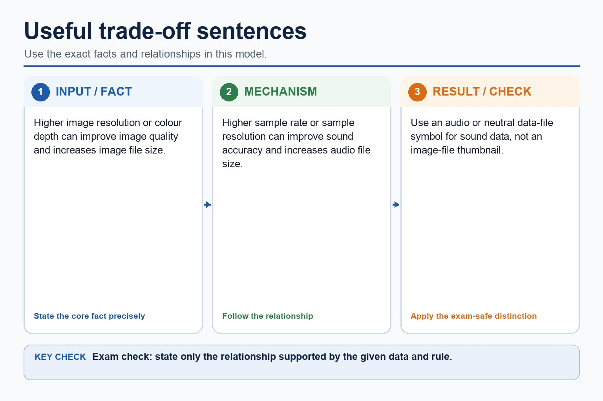

Cambridge AS9618 | Paper 1 | Section 1: Information representation
Binary, denary and hexadecimal number systems
Flexible-depth lesson
S1.02, S1.03 | Learn from the diagrams, test the method, then choose the practice you need.
Choose a Quick, Full or Deep route
Quick route
Use the diagnostic, learning objectives, first worked example and foundation question. Stop once the learner can explain the central distinction accurately.
Full route
Use every knowledge-point material set, the worked method, the terminology check and all questions.
Deep route
Add the prerequisite refresher, ask learners to connect the concept checklist, discuss the labelled extension and complete a transfer question without a model answer.
Part 1 | optional depth
Prerequisite knowledge and quick diagnostic
Recall S1.02 before starting this lesson.
Give one accurate definition or method step before continuing. If it is missing, revisit only that prerequisite.
Open optional prerequisite refresher
The Version 2 row requires binary, denary, hexadecimal, Binary Coded Decimal (BCD), one's complement and two's complement; BCD and complements are representations rather than additional number bases.
Show understanding of binary, denary and hexadecimal number systems, BCD, and one's- and two's-complement representations.
Part 2 | knowledge-point material sets
Learn each point through visuals
Follow the map, the three-part explanation and the concrete cue. Open precise wording only after the idea is clear.
Open the concept checklist and choose what to teach
MeaningThe Version 2 row requires binary, denary, hexadecimal, Binary Coded Decimal (BCD), one's complement and two's complement
MechanismConversions apply to integer values and the binary, denary, hexadecimal, BCD, one's-complement and two's-complement representations named in the preceding Version 2 row
Consequencethe required integer representations are binary, denary, hexadecimal, BCD, one's-complement and two's-complement
S1.02 diagrams
1 / 4
01
Diagram · 1 of 4
Three ways to represent negative binary values
Open text transcript
Positive 23 in 8 bits is 00010111.
The 8-bit sign-and-magnitude representation of -23 is 10010111.
The 8-bit one's-complement representation of -23 is 11101000.
The 8-bit two's-complement representation of -23 is 11101001.
Every input, intermediate state and result must contain exactly 8 bits.
02
Comparison · 2 of 4
Question triage: choose the toolbox first
Open text transcript
Number bases
Look for binary, denary, hexadecimal, place values, carries, overflow or two's complement.
Text representation
Look for ASCII, Unicode, character set, character code, multilingual text or symbols.
Images and sound
Look for resolution, colour depth, sampling rate, sampling resolution, duration and file size.
Compression
Look for lossless, lossy, exact reconstruction, reduced quality, RLE or repeated data.
03
Concrete example · 3 of 4
Converting simple binary fractions

Open text transcript
Binary fractional place values are 1/2, 1/4, 1/8 and 1/16 from left to right.
0.1010 binary equals 1/2 + 1/8 = 0.625 denary.
0.1100 binary equals 1/2 + 1/4 = 0.75 denary.
04
Diagram · 4 of 4
Two’s complement method
Open text transcript
Write the positive magnitude using exactly 8 bits.
Invert every bit, then add 1 to form the negative two's-complement value.
For +45: 00101101 becomes 11010010 after inversion, then 11010011 after adding 1.
The 8-bit value 11010011 represents -45 in two's complement.
When the MSB is 1, quick decode uses unsigned value minus 256.
Open precise syllabus wording
Show understanding of binary, denary and hexadecimal number systems, BCD, and one's- and two's-complement representations.
The Version 2 row requires binary, denary, hexadecimal, Binary Coded Decimal (BCD), one's complement and two's complement; BCD and complements are representations rather than additional number bases.
StartConversions apply to integer values and the binary, denary, hexadecimal, BCD, one's-complement and two's-complement representations named in the preceding Version 2 row
Changethe required integer representations are binary, denary, hexadecimal, BCD, one's-complement and two's-complement
CheckThe Version 2 row requires binary, denary, hexadecimal, Binary Coded Decimal (BCD), one's complement and two's complement
Write 1 if the place value fits into the remaining number.
02
Diagram · 2 of 5
Three ways to represent negative binary values
Open text transcript
Positive 23 in 8 bits is 00010111.
The 8-bit sign-and-magnitude representation of -23 is 10010111.
The 8-bit one's-complement representation of -23 is 11101000.
The 8-bit two's-complement representation of -23 is 11101001.
Every input, intermediate state and result must contain exactly 8 bits.
03
Concrete example · 3 of 5
One hex digit represents one nibble
Open text transcript
Why four bits?
Four bits can represent 16 patterns: from 0000₂ to 1111₂. Hexadecimal has exactly 16 digits: 0 to F.
Binary to hex
Group the binary value into nibbles from the right. Convert each nibble separately.
Hex to binary
Replace each hex digit with its 4-bit binary nibble. Keep all four bits for each digit.
1101₂ = D₁₆ and 0110₂ = 6₁₆, so 1101 0110₂ = D6₁₆.
04
Comparison · 4 of 5
Precision limits: why computers sometimes approximate

Open text transcript
0.75 denary equals 0.1100 binary exactly.
With four fractional bits, truncating 0.1 gives 0.0001 binary, which equals 0.0625 denary.
The truncation error is 0.0375.
Rounding 0.1 to the nearest four-bit fractional value gives 0.0010 binary, which equals 0.125 denary.
The rounding error is 0.025, so 0.125 is nearer to 0.1 than 0.0625.
05
Diagram · 5 of 5
Two’s complement method
Open text transcript
Write the positive magnitude using exactly 8 bits.
Invert every bit, then add 1 to form the negative two's-complement value.
For +45: 00101101 becomes 11010010 after inversion, then 11010011 after adding 1.
The 8-bit value 11010011 represents -45 in two's complement.
When the MSB is 1, quick decode uses unsigned value minus 256.
Open precise syllabus wording
Convert an integer value from one required number base or representation to another.
Conversions apply to integer values and the binary, denary, hexadecimal, BCD, one's-complement and two's-complement representations named in the preceding Version 2 row.
Supporting diagram library
1 / 9
01
Diagram · 1 of 9
8-bit binary place values
Open text transcript
Bit position 7 6 5 4 3 2 1 0
Place value 128 64 32 16 8 4 2 1
Example bits 1 0 1 1 0 1 1 0
Count? yes no yes yes no yes yes no
10110110₂ = 128 + 32 + 16 + 4 + 2 = 182₁₀
02
Diagram · 2 of 9
Range and leading zeros
Open text transcript
Smallest 8-bit value
00000000₂ = 0₁₀
All place values are off.
Largest 8-bit value
11111111₂ = 255₁₀
All place values are on: 128 + 64 + 32 + 16 + 8 + 4 + 2 + 1.
Leading zeros
00000111₂ = 111₂ = 7₁₀
03
Diagram · 3 of 9
Hexadecimal digits: 0-9 then A-F
Open text transcript
nibble 4-bit group
04
Diagram · 4 of 9
Padding with leading zeros
Open text transcript
When padding is needed
If the leftmost group has fewer than four bits, add leading zeros to complete the nibble.
101101₂ → 0010 1101₂ → 2D₁₆
The value does not change because leading zeros do not add active place values.
Base labels
10 could mean denary ten or binary two. Use base labels when the notation could be ambiguous.
05
Diagram · 5 of 9
8-bit signed ranges and zero

Open text transcript
Sign-and-magnitude uses one sign bit and seven magnitude bits; its range is -127 to +127 and it has two zero patterns.
One's complement forms a negative value by inverting all eight bits; its range is -127 to +127 and it has two zero patterns.
Two's complement uses all eight bits as one weighted value with MSB place value -128.
The 8-bit two's-complement range is -128 to +127 and it has one zero pattern.
One's complement and two's complement do not store a separate magnitude field.
06
Diagram · 6 of 9
Binary fractional place value

Open text transcript
Example 10.101₂
10.101₂ = 2 + 1/2 + 1/8 = 2.625₁₀
07
Diagram · 7 of 9
System cases

Open text transcript
Multilingual chat app
Use Unicode so messages can include characters from many languages.
Sensor logger
Use enough bits and signed representation if values may be negative.
Website thumbnail
Lower resolution and lossy compression may be acceptable to reduce transfer time.
Legal archive
Use lossless compression because exact reconstruction is required.
08
Diagram · 8 of 9
A decision framework

Open text transcript
1. What data?
Integer, signed value, text, image, sound or repeated data.
2. What range?
Check minimum, maximum, precision and whether negative values are possible.
3. What quality?
Choose resolution, colour depth, sample rate or sampling resolution only as high as needed.
4. What constraints?
Storage, bandwidth, compatibility, exact reconstruction and processing cost.
09
Diagram · 9 of 9
Useful trade-off sentences

Open text transcript
Higher image resolution or colour depth can improve image quality and increases image file size.
Higher sample rate or sample resolution can improve sound accuracy and increases audio file size.
Use an audio or neutral data-file symbol for sound data, not an image-file thumbnail.
Apply the idea
Worked method
01Convert D6 hexadecimal
02D6 hexadecimal = 1101 0110 binary.
03In denary, D6 = 13 x 16 + 6 = 214, so all three representations encode the integer 214.
Open precise terminology and exam facts
The Version 2 row requires binary, denary, hexadecimal, Binary Coded Decimal (BCD), one's complement and two's complement; BCD and complements are representations rather than additional number bases.
Conversions apply to integer values and the binary, denary, hexadecimal, BCD, one's-complement and two's-complement representations named in the preceding Version 2 row.
Binary is base 2 and uses place values that are powers of 2. Denary is base 10 and uses place values that are powers of 10. A base label identifies the representation; it does not change the integer value.
To convert a binary integer to denary, add the binary place values whose bits are 1. To convert a denary integer to binary, select powers of 2 that sum to the value and write every required bit position, including zeros.
Representation overview: the required integer representations are binary, denary, hexadecimal, BCD, one's-complement and two's-complement. Conversion means preserving the integer value while changing its base or signed representation.
Hexadecimal is base 16 and uses digits 0 to 9 and A to F. One hexadecimal digit represents one four-bit binary nibble, so grouping from the right gives an exact conversion between binary and hexadecimal integer representations.
To convert hexadecimal to denary, multiply each digit value by its power-of-16 place value. Binary, denary and hexadecimal may encode the same integer value even though their written representations differ.
One's-complement representation forms a negative integer by inverting every bit of its positive fixed-width value. Two's-complement representation inverts every bit and adds 1. These are binary representations of signed integers, not separate number bases.
Unsigned subtraction can be performed column by column using borrowing, or by adding the two's complement of the subtrahend. For signed two's-complement subtraction A - B, form the two's complement of B and add it to A. Retain the fixed width, interpret the sign bit and check the representable range.
Binary subtraction applies to each positive or negative binary integer as well as binary addition; use the stated fixed width and signed representation when interpreting the result.
BCD encodes each denary digit separately in four bits. For example, 59 becomes 0101 1001, not the pure-binary value 00111011.
Only 0000 to 1001 are valid BCD digit groups. BCD is used where decimal digits must be displayed or processed exactly, such as digital clocks, calculators and financial displays, although it usually uses more bits than pure binary.
Beyond syllabus / 延伸知识（不要求背诵）
real file formats also store headers and metadata, so two files with the same visible content may still have different sizes.
Part 3 | select by learner need
Practice by question type
convertcalculatefoundation4 marks
Question 1. Convert the integer 159 denary to hexadecimal and then to 8-bit binary.
Show answer and marking guidance
Answer: 159 = 9 x 16 + 15; 9F hexadecimal; maps 9 to 1001 and F to 1111; 10011111 binary
Marking guidance: Do not treat A to F as decimal two-digit values.
Common error: For the command word convert, perform that exact action; do not replace it with an unrelated fact.
explainexplainapplication4 marks
Question 2. Explain one practical application of BCD and one practical application of hexadecimal.
Show answer and marking guidance
Answer: BCD application such as a digital clock, calculator or financial display; links BCD to separate exact denary digits; hexadecimal application such as memory addresses, machine-code/debug output or colour values; links hexadecimal to compact four-bit grouping
Marking guidance: Do not award a named application without explaining why the representation suits it.
Common error: Do not repeat the same point in different words; each mark needs a separate idea or method step.
explainexplaintransfer2 marks
Question 3. Why is hexadecimal suitable for a memory address?
Show answer and marking guidance
Answer: It is a compact form of binary with one digit per four-bit nibble.
Marking guidance: Award one mark for each distinct, technically accurate point or method step.
Common error: Do not copy the worked example unchanged; transfer the method and check it against the new context.
Related past-paper indexes
Reference
Marks
Command word
Question type
9618/13/W/25 Q2(a)
3
identify
recall
9618/11/W/25 Q1(ii)
2
complete
calculate
9618/11/W/25 Q1(iii)
2
convert
calculate
9618/12/S/25 Q2(a)
2
convert
calculate
Index only: Cambridge question and mark-scheme wording is not reproduced on this public course page.
Part 4 | close when ready
Summary and exam reminders
Summary
Define binary, denary and hexadecimal number systems with the exact technical vocabulary expected by the syllabus.
Use the lesson method on a fresh context and show the intermediate decision, representation or calculation.
Match the shape of the answer to the command word and the available marks.
Check the final answer against the scenario instead of repeating a memorised sentence.
Common error to correct
Students often treat binary digits as decoration. Correction: every bit position has a value; if the position changes, the value changes.
Exam technique
Follow the command word: state gives a fact; explain links a cause to a consequence; compare covers both sides.
Match the number of independent points or method steps to the available marks.
For binary, denary and hexadecimal number systems, use the exact technical term before applying it to the scenario.